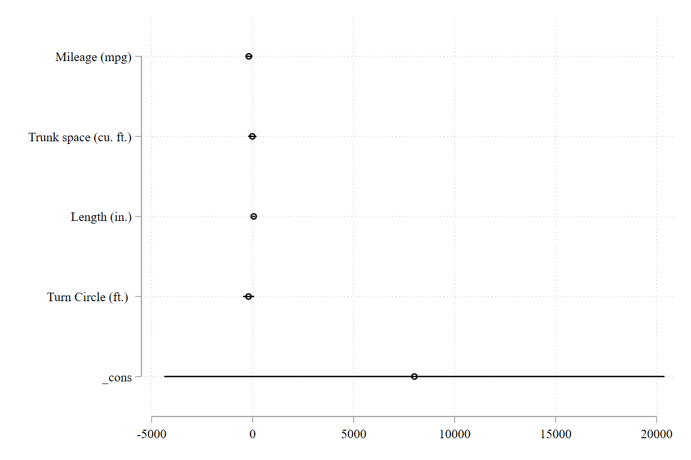
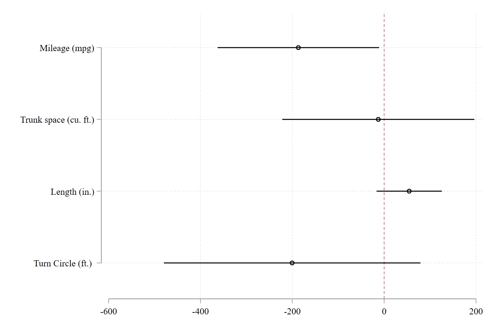
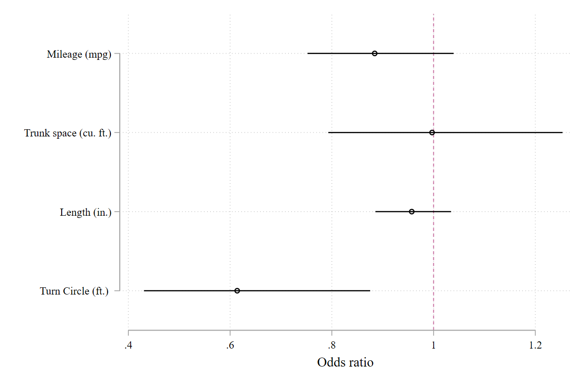
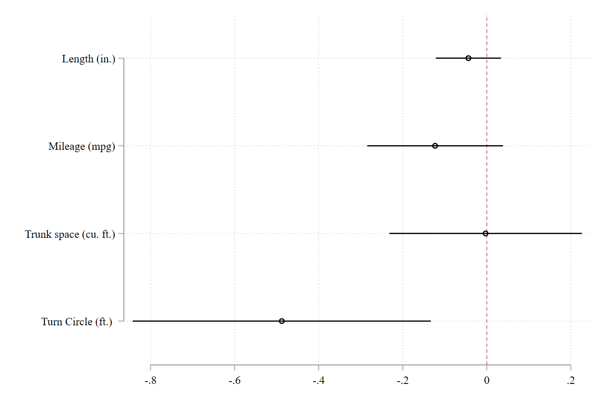
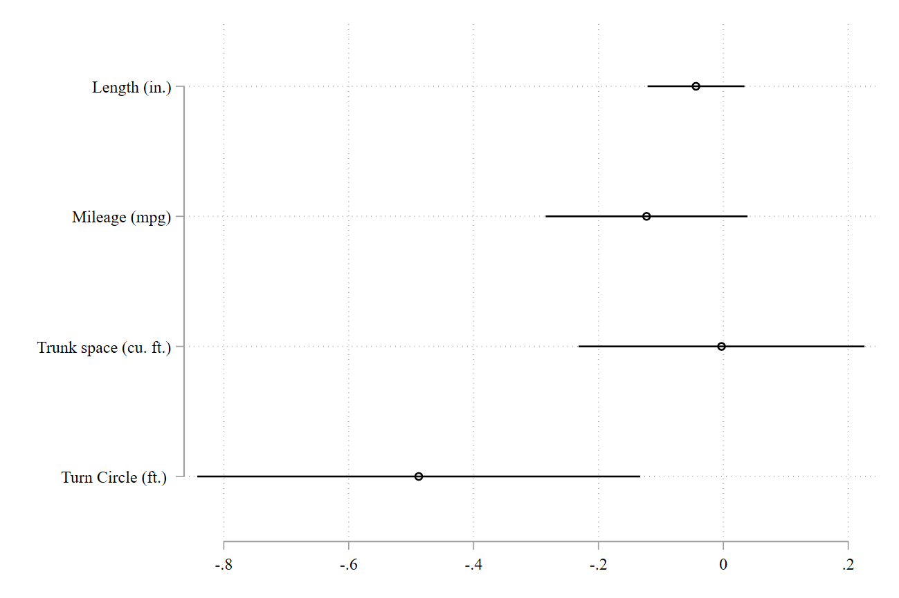
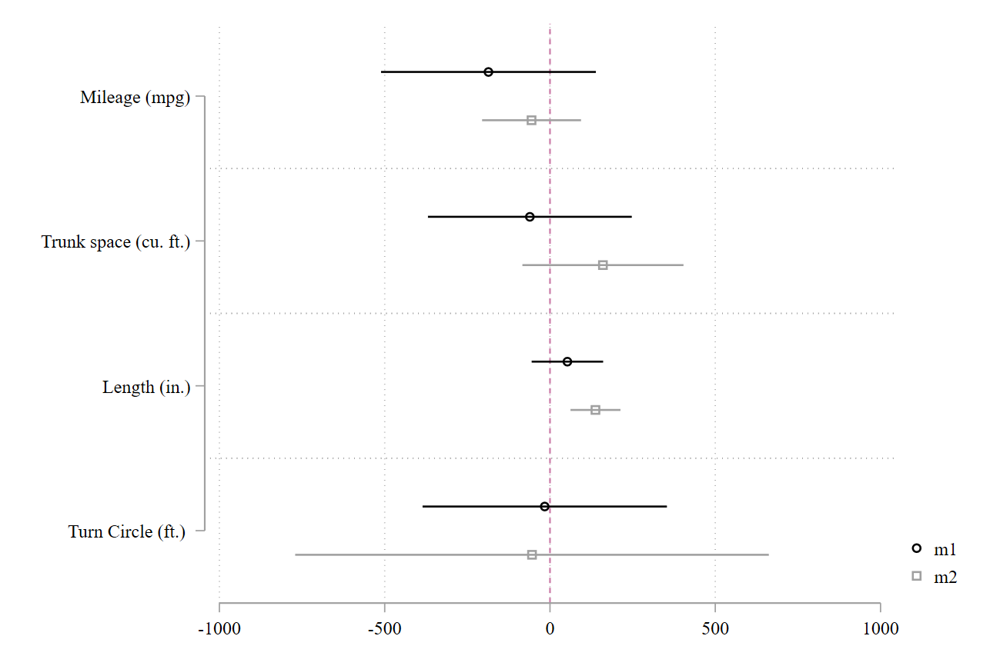
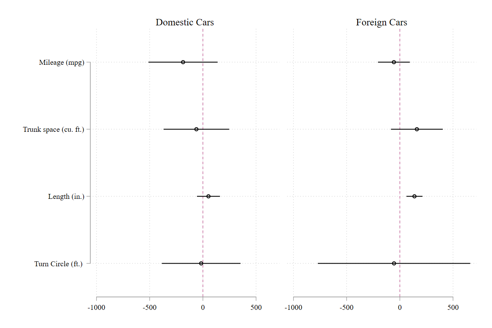
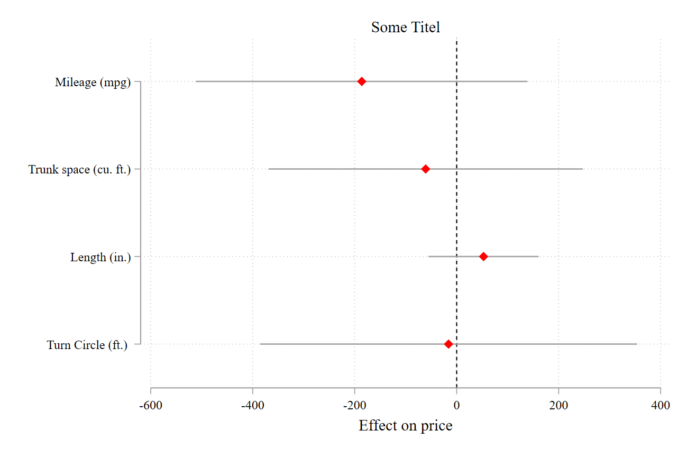
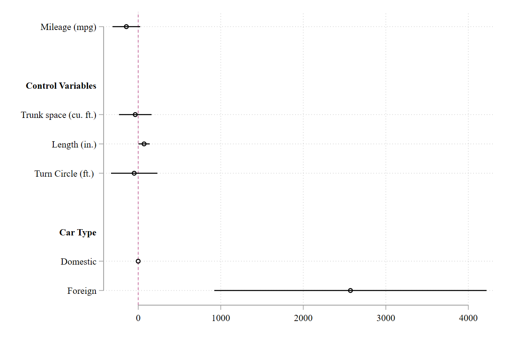

Chapter 8 Coefplot
In Stata wird zumeist Coefplot, ein Ado von Ben Jann genutzt, um die Punktschätzer der Regression zu visualisieren, also die Koeffizienten zu plotten. Du musst also erst das Ado installieren, wenn du noch nie Coefplot genutzt hast:
ssc install coefplot, replaceCoefplot ist ziemlich easy aufgebaut, nutze einfach den coefplot Befehl und die Punktschätzer der letzten berechneten Regression (oder eines anderen multivariaten Verfahrens) zu visualisieren.
sysuse auto, clear
quietly regress price mpg trunk length turn
coefplot
Wie die Abbildung zeigt, macht es häufig keinen Sinn, die Konstante zu visualieren, da es sonst so aussieht, als ob die Punktschätzer der einzelnen Variablen gar keinen Effekt haben (und häufig sind wir ja nicht an der Konstante interessiert)
Mit
drop(_cons)wird die Konstante (oder auch andere Variablen wenn du die Variablenname hinzufügst) aus dem Coefplot ausgeschlossenxline(0)definiert wo die Markierungslinie sein soll. Hier sind wir daran interessiert, ob das Konfidenzinterval des Punktschätzers die Null beinhaltet, so erkennen wir auf den ersten Blick, ob ein Koeffizient signifikant ist
coefplot, drop(_cons) xline(0)
- Sollen andere Koeffizient visualisiert werden, kann es sein, dass Anpassungen an den Standardbefehl vorgenommen werden müssen
- Beim Logit können wir mit
eformdie Odds Ratios anstelle der Logit Koeffizient visualisieren - Zur leichteren Interpretation setzen wir die Markierungslinie mit
xline(1)auf 1
quietly logit foreign mpg trunk length turn
coefplot, drop(_cons) xline(1) eform xtitle(Odds ratio)
8.1 Sort and order
Zur leichteren Interpretation kann es auch hilfreich sein, Variablen neu zu ordnen, beispielsweise alphabetisch:
coefplot, drop(_cons) xline(0) ///
order(length mpg t*)
Nach der Größe der Effekte, in aufsteigender oder absteigender (descending) Reihenfolge:
*Absteigend mit
*coefplot, sort(, descending) drop(_cons)
*Aufsteigend:
coefplot, sort drop(_cons) Oder auch nach dem Standardfehler der Koeffizienten:
coefplot, sort(, by(se)) drop(_cons) 
8.2 Modellvergleiche
Graphische Verfahren sind besonder gut geeignet, um Modelle miteinander zu vergleichen. Hierfür werden die Modelle zuerst gespeichert. Beispielsweise estimates store m1 speichert das erste Model unter dem Namen m1.
Alle gespeicherten Modelle werden sodann dem Coefplot Befehl hinzugefügt:
quietly regress price mpg trunk length turn if foreign==0
estimates store m1
quietly regress price mpg trunk length turn if foreign==1
estimates store m2
coefplot m1 m2, drop(_cons) xline(0)
Oder wir erstellen Subplots für unsere Modelle durch die Listung mit ||. Mit dem Befehl bylabel(Name) geben wir den Modellen noch einen einschlagigen Namen.
coefplot m1, bylabel(Domestic Cars) ///
|| m2, bylabel(Foreign Cars) ///
||, drop(_cons) xline(0)
8.3 Further ado
Für eine Präsentation oder Abschlussarbeit lassen sich natürlich noch weitere graphische Aspekte anpassen:
lcolor: Farbe der Markierungsliniemcolorundmsymbolfür die Farbe und das Symbol der Marker- Labels der X Achse (
xtitle) oder des Titel der Grafik (title)
coefplot (m1, pstyle(p2)), drop(_cons) ///
xline(0, lcolor(black)) ///
mcolor(red) msymbol(D) ///
xtitle(Effect on price) ///
title("Some Titel")
Ebenso können headings eingebaut werden, beispielweise um Haupteffekte von Interaktioneffekten graphisch zu trennen. Oder, wie im nächsten Beispiel, um einen Haupteffekt von einer Reihe an Kontrollvariablen graphisch zu trennen.
Die Headings könnnen dabei direkt an der Stelle der Variablen oder an der Stelle der jeweiligen Ausprägung einer Variable (wie bei 0.foreign) ausgegeben werden. Mit omitted baselevels wird die Ausgabe der Referenzkategorie unterdrückt.
quietly regress price mpg trunk length turn i.foreign
coefplot, xline(0) omitted baselevels drop(_cons) ///
headings(trunk = "{bf:Control Variables}" ///
0.foreign = "{bf:Car Type}") 
Nicht das passende gefunden? Wahrscheinlich wirst du auf der Homepage von Ben Jann fündig, dort findet sich eine Vielzahl an Anpassungsmöglichkeiten, hier waren nur einige der wichtigsten Punkte aufgeführt.